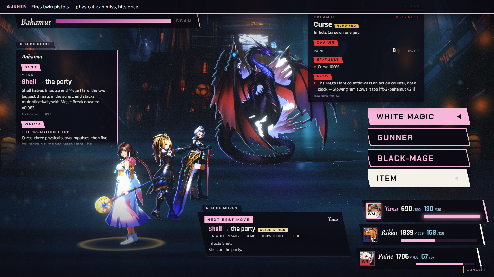
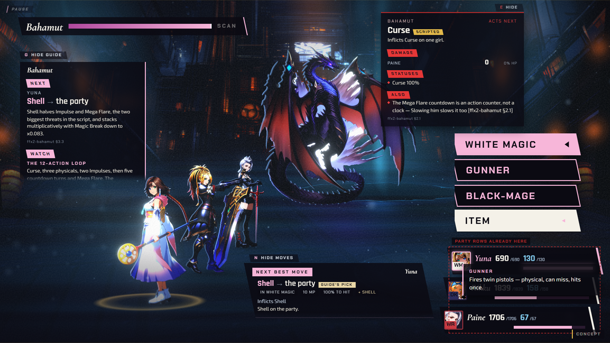
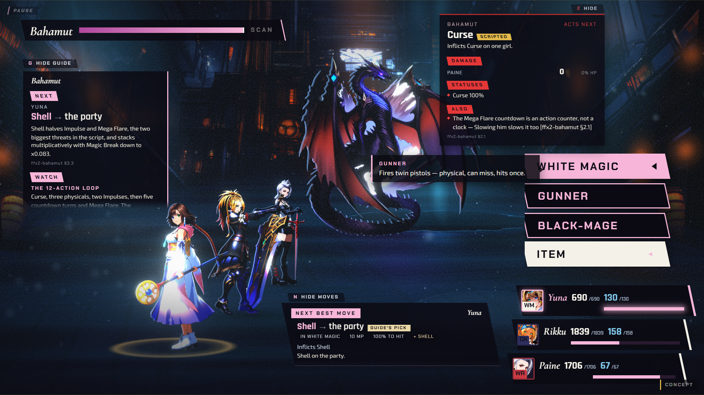
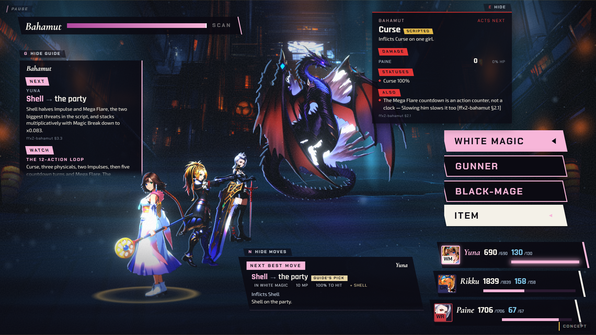

Full-width band above the field, FFX-2's own canon spot for Battle Help. Clears the command window and the party rows completely; costs a thin strip of the top of the frame at all times.

This is the placement 100abe95 shipped and 194fa87 switched off: the slab lands on the party HP/MP rows (dashed box), which anchor `bottom:10px..100px` in the same corner. No repositioning clears both without moving one of the two.

Floats left of the cascade at the row's height, clear of the party column. Costs battlefield real estate over whatever stands there — here it sits over Bahamut's body, which will vary by encounter and camera.

Today's shipped state. commandHelp.ts's description logic is correct and unused; the player still gets no read on what a highlighted row does.